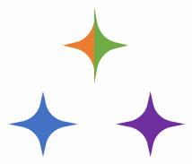

A benchmark for system-prompt optimization in multi-agent LLM systems
Single Agent
Multi-Agent Systems
Prompt-optimization gains using a state-of-the-art optimizer GEPA in single-agent and multi-agent settings. While GEPA consistently improves single-agent performance across all five diverse tasks, its natural multi-agent extension yields highly variable effects across tasks and workflow topologies, ranging from large gains to severe performance drops.
A comprehensive benchmark for evaluating system-prompt optimizers for MAS. It spans diverse MAS configurations across task domains (reasoning, coding, tool calling), five workflow topologies (both existing and newly constructed systems), communication protocols from free-form to highly structured coordination, varying team sizes, and two default prompt optimizers — a foundation for proposing, analyzing, and comparing system-prompt optimization algorithms under controlled MAS configurations.
Systematically evaluating a natural multi-agent extension of GEPA, a state-of-the-art single-agent prompt optimizer, against default prompts. The results highlight the promise of prompt optimization for MAS: improvements reach up to +24.0 points. Yet they also reveal the need for principled algorithms tailored to multi-agent settings, as performance can drop by as much as −16.0 points for certain configurations.
Optimization shows greater potential when tasks have explicit, controllable, and verifiable agent-local behaviors, and when communication protocols impose an explicit shared structure that makes agent interactions easier to control and transfer; it also needs to be workflow-topology-aware. Optimization becomes harder as team size grows — confirming the challenges of scaling MAS prompt optimization and motivating more scalable, robust algorithms.
MAS-PromptBench varies each configuration axis independently while holding the others fixed.
Overview of benchmark MAS-PromptBench. Given an input task, a multi-agent system produces a final solution through interactions among LLM-based agents. MAS-PromptBench measures prompt-optimization gains across four axes: task distribution, workflow topology, communication protocol, and team size.
We model a MAS as a tuple $\mathcal{M} = (\mathcal{A}, G, P)$: a collection of agents $\mathcal{A}$, an inter-agent coordination workflow $G$, and a communication protocol $P$. Each agent pairs a frozen LLM with a learnable system prompt. With model weights fixed, system-prompt optimization maximizes the expected task score over the joint prompts. Fixing an optimizer and the base model, and with a configuration $(\mathcal{T}, G, n, P)$, we measure the prompt-optimization gain $\Delta$ as the difference between the optimized ($\pi^\star$) and unoptimized ($\pi^0$) system scores:

The five coordination structures evaluated by our protocol. Arrows indicate message flow; nodes are agents.
When does a better local prompt become a better system? Each factor controls a different stage of that transfer.
Coding and tool-calling tasks gain more — and more consistently — than reasoning tasks, because their structured interfaces (code, tests, function calls) preserve local improvements across handoffs. Domain averages capture it: coding +3.7 and tool-calling +4.3 points, versus only +1.3 for reasoning. The peaks are large too — up to +24.0 on Sequential BFCL — while reasoning tops out near +8.0.
| SingleLangGraph | IndependentLangGraph | SequentialCrewAI | CentralizedAutoGen | DecentralizedOpenAI SDK | Average | ||
|---|---|---|---|---|---|---|---|
| Reasoning | GPQA-Diamond Acc. | 54.0 / 58.0+4.0 | 73.0 / 73.00.0 | 53.0 / 56.0+3.0 | 74.0 / 74.00.0 | 60.0 / 60.00.0 | 62.8 / 64.2+1.4 |
| HotpotQA EM | 26.0 / 39.0+13.0 | 27.0 / 26.0−1.0 | 27.0 / 27.00.0 | 20.0 / 22.0+2.0 | 16.0 / 18.0+2.0 | 23.2 / 26.4+3.2 | |
| MATH Acc. | 49.0 / 51.0+2.0 | 76.0 / 60.0−16.0 | 58.0 / 62.0+4.0 | 63.0 / 69.0+6.0 | 66.0 / 66.00.0 | 62.4 / 61.6−0.8 | |
| Coding | LiveCodeBench pass@1 | 12.0 / 12.00.0 | 14.0 / 18.0+4.0 | 12.0 / 18.0+6.0 | 14.0 / 16.0+2.0 | 8.0 / 12.0+4.0 | 12.0 / 15.2+3.2 |
| APPS pass@1 | 52.0 / 66.0+14.0 | 74.0 / 78.0+4.0 | 62.0 / 80.0+18.0 | 62.0 / 76.0+14.0 | 74.0 / 74.00.0 | 64.8 / 74.8+10.0 | |
| SWE-Bench Verified | 33.3 / 30.0−3.3 | 36.7 / 33.3−3.4 | 33.3 / 30.0−3.3 | 16.7 / 20.0+3.3 | 40.0 / 36.7−3.3 | 32.0 / 30.0−2.0 | |
| Tool-Calling | BFCL Acc. | 84.0 / 88.0+4.0 | 88.0 / 88.00.0 | 60.0 / 84.0+24.0 | 96.0 / 96.00.0 | 84.0 / 88.0+4.0 | 82.4 / 88.8+6.4 |
| ToolHop Acc. | 62.0 / 64.0+2.0 | 62.0 / 68.0+6.0 | 66.0 / 73.0+7.0 | 68.0 / 69.0+1.0 | 67.0 / 71.0+4.0 | 65.0 / 69.0+4.0 | |
| API-Bank Acc. | 77.0 / 79.0+2.0 | 74.0 / 76.0+2.0 | 60.0 / 66.0+6.0 | 77.0 / 72.0−5.0 | 62.0 / 69.0+7.0 | 70.0 / 72.4+2.4 | |
Prompt-optimization gains of MAS-GEPA for nine diverse tasks on popular existing MAS frameworks. Each cell reports baseline / optimized performance, followed by the signed change $\Delta$ in percentage points. Blue indicates improvement, orange indicates regression, and gray indicates no change.
Every multi-agent topology gains less than the single-agent baseline (+4.2 points), with all four peaking at just +2.3 — MAS is simply harder to optimize. Gains also swing by topology: the same optimizer lifts Sequential API-Bank by +9.0 yet drops Centralized by −5.0. The swings have structure — Independent can erase gains as parallel agents overwrite one another (MATH −16.0), while Centralized amplifies both wins and losses (APPS +14.0, HotpotQA −9.0) — motivating topology-aware optimization rather than one-size-fits-all.
| Single | Independent | Sequential | Centralized | Decentralized | |
|---|---|---|---|---|---|
| GPQA (Acc.) | 54.0 / 58.0+4.0 | 73.0 / 73.00.0 | 75.0 / 78.0+3.0 | 70.0 / 70.00.0 | 71.0 / 71.00.0 |
| HotpotQA (EM) | 26.0 / 39.0+13.0 | 27.0 / 26.0−1.0 | 29.0 / 28.0−1.0 | 19.0 / 10.0−9.0 | 20.0 / 32.0+12.0 |
| MATH (Acc.) | 49.0 / 51.0+2.0 | 76.0 / 60.0−16.0 | 74.0 / 74.00.0 | 66.0 / 69.0+3.0 | 81.0 / 81.00.0 |
| LiveCodeBench (pass@1) | 12.0 / 12.00.0 | 14.0 / 18.0+4.0 | 16.0 / 16.00.0 | 16.0 / 16.00.0 | 18.0 / 18.00.0 |
| APPS (pass@1) | 52.0 / 66.0+14.0 | 74.0 / 78.0+4.0 | 82.0 / 84.0+2.0 | 70.0 / 84.0+14.0 | 86.0 / 86.00.0 |
| SWE-Bench Verified (Resolved) | 33.3 / 30.0−3.3 | 36.7 / 33.3−3.4 | 33.3 / 26.7−6.6 | 30.0 / 33.3+3.3 | 36.7 / 36.70.0 |
| BFCL (Acc.) | 84.0 / 88.0+4.0 | 88.0 / 88.00.0 | 84.0 / 80.0−4.0 | 92.0 / 96.0+4.0 | 88.0 / 88.00.0 |
| ToolHop (Acc.) | 62.0 / 64.0+2.0 | 62.0 / 68.0+6.0 | 71.0 / 73.0+2.0 | 66.0 / 70.0+4.0 | 65.0 / 71.0+6.0 |
| API-Bank (Acc.) | 77.0 / 79.0+2.0 | 74.0 / 76.0+2.0 | 61.0 / 70.0+9.0 | 77.0 / 72.0−5.0 | 65.0 / 68.0+3.0 |
| Average | 49.9 / 54.1+4.2 | 58.3 / 57.8−0.5 | 58.4 / 58.9+0.5 | 56.2 / 57.8+1.6 | 59.0 / 61.3+2.3 |
Prompt-optimization gains of MAS-GEPA for five workflow topologies. Each cell reports baseline / optimized performance, followed by the signed change $\Delta$ in percentage points. Blue indicates improvement, orange indicates regression, and gray indicates no change.
Prompt-optimization gain Δ (pp) by communication protocol, grouped by topology. Adding structure improves gain transfer.
More structure means larger gains: the average rises from +1.6 (Freeform) to +2.4 (Semi-structured) to +4.3 (Structured). The effect is largest on evidence-passing tasks like HotpotQA, where downstream agents must reuse upstream outputs, and weakest on LiveCodeBench, where executable code and tests decide correctness regardless of message format.
Prompt-optimization gain Δ (pp) across team sizes by topology. The dashed line is the mean across topologies — gains decay as teams grow.
As teams grow ($n \in \{2,4,8,10\}$), gains generally shrink — the average falls from +2.4 at $n{=}2$ to −2.1 at $n{=}10$ — as agent-local improvements get diluted across more handoffs and intermediate states. Topology mediates the effect: Centralized HotpotQA collapses (+5.0 → −12.0), while Decentralized HotpotQA stays nonnegative at every size.
@article{bai2026mas,
title={MAS-PromptBench: When Does Prompt Optimization Improve Multi-Agent LLM Systems?},
author={Bai, Juyang and Shi, Laixi},
journal={arXiv preprint arXiv:2606.23664},
year={2026}
}